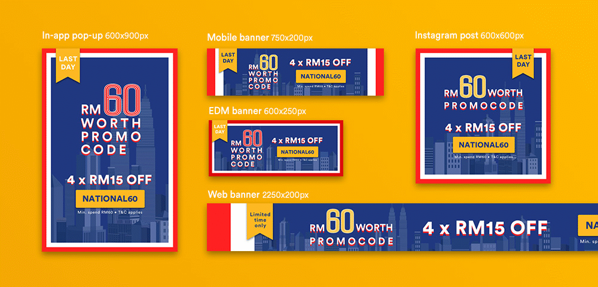
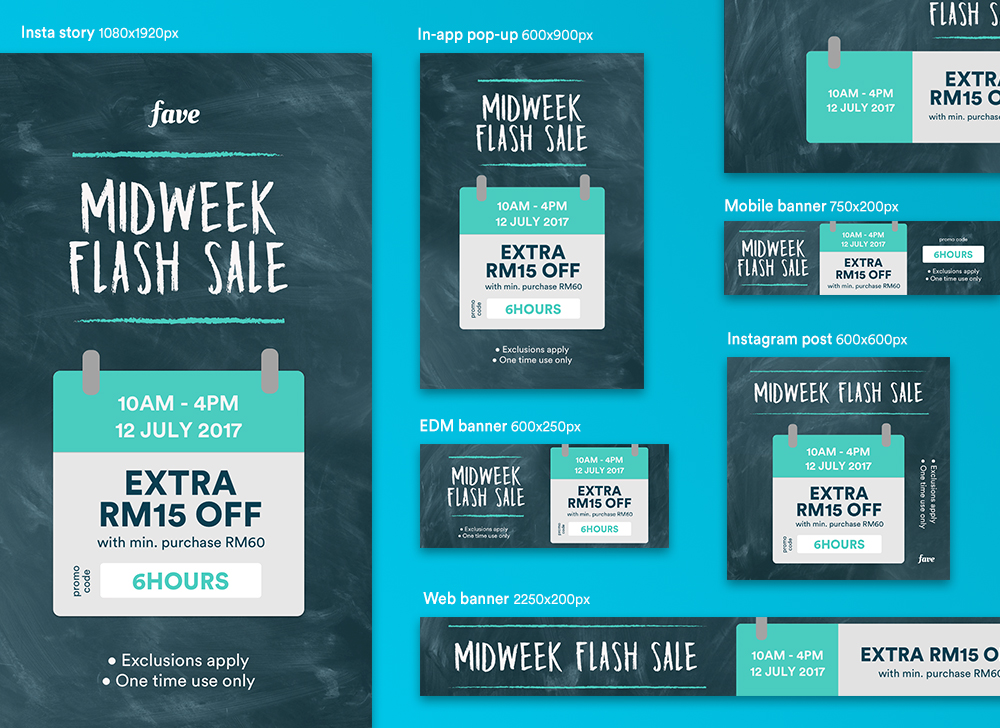
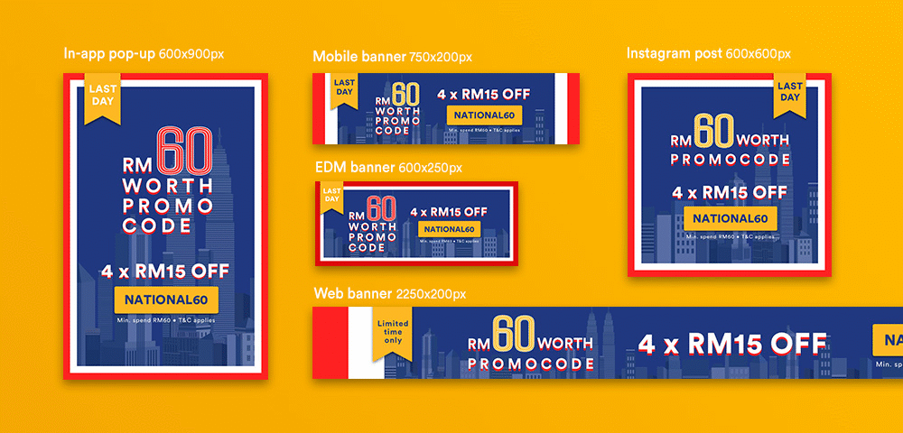
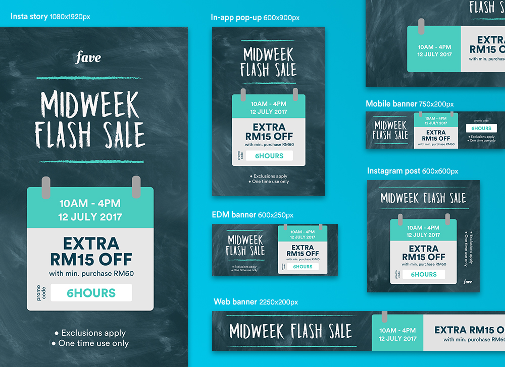

Fave Asia
Fave is one of the fastest growing startups in South East Asia. The Fave app, with over 100,000 active users, create connections between local businesses and consumers by providing great deals on food, beauty, fitness, and travel. I had an opportunity working with the Creative Team at the Malaysia Headquater where I was responsible to design and implement advertising campaigns for daily special promotions.
digital campaigns
The Fave app has offered special daily features to customers and I was to deliver a series of digital campaign that conveyed the theme of the day. The campaign was promoted across multiple channels such as Facebook, email blast, and Fave's own application and website.
The graphics did not follow a defined concept but instead I had freedom to create design elements based on the theme/promotion of the day proposed by the Marketing Team. Due to fast-paced consumer sales nature, the design requests were usually made in a very short notice, so I would need to make fast decisions and balance the workload along with other projects. Hence I learned to develop skills in fast decision making and ability to handle multiple deadlines while delivering quality work.
Below are some of the example campaigns I have created:
 



 ◀ previous project: PRESSREADER
next project: PATCHJOI ▶
◀ previous project: PRESSREADER
next project: PATCHJOI ▶